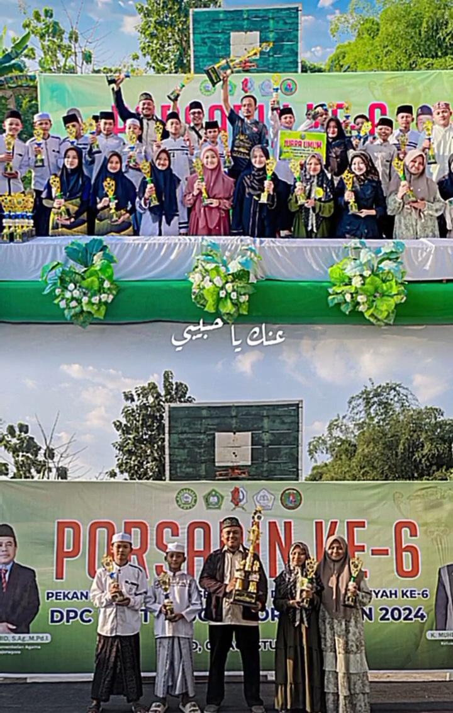

INAYATUL HAMIDA
Mahasiswa | Semester 2
Mahasiswa | Semester 2
Saya adalah mahasiswa angkatan 2025 jurusan Sistem Informasi di Universitas Trunojoyo Madura. Saya memiliki minat besar di bidang pemrograman, baik web maupun berbasis objek. Bahasa yang saya kuasai antara lain Python, Java, C, HTML, dan CSS.

2024
Juara 1 lomba desain grafis di IKIP Bojonegoro.

2024
Juara 1 lomba MTQ tingkat kabupaten.
Membuat desain logo menggunakan CorelDraw.
Mengikuti lomba Musabaqoh Tilawatil Qur'an.